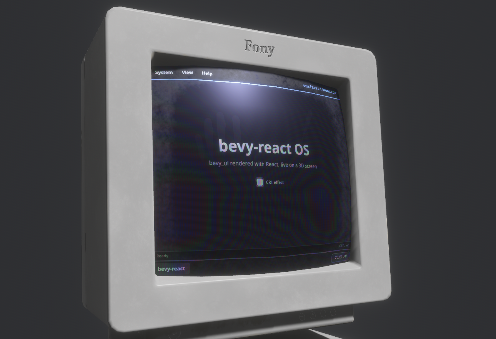

<surface>
<surface> renders a React subtree into an offscreen texture instead of onto
the screen. Your Bevy app puts that texture on any material: an in-world
monitor, a control panel, a hologram with your own shader on top. It is the
inverse of <portal>, which shows a camera's texture inside the
UI. Tag the mesh that displays the texture with SurfacePointer and the UI
on it is clickable in 3D.
Usage
TSX
function Monitor() {
const [count, setCount] = useState(0);
return (
<surface target="monitor" style={{ backgroundColor: "#1a1b26" }}>
<button onClick={() => setCount((n) => n + 1)}>
<text>{`Clicked ${count} times`}</text>
</button>
</surface>
);
}Rust
use bevy::prelude::*;
use bevy_react::surface::{SurfacePointer, SurfaceSpec, Surfaces};
fn setup(
mut commands: Commands,
mut surfaces: ResMut<Surfaces>,
mut images: ResMut<Assets<Image>>,
mut meshes: ResMut<Assets<Mesh>>,
mut materials: ResMut<Assets<StandardMaterial>>,
) {
let screen = surfaces.create(
&mut images,
"monitor",
SurfaceSpec {
size: UVec2::new(800, 600),
..default()
},
);
commands.spawn((
Mesh3d(meshes.add(Rectangle::new(4.0, 3.0))),
MeshMaterial3d(materials.add(StandardMaterial {
base_color_texture: Some(screen),
unlit: true,
..default()
})),
SurfacePointer::new("monitor"),
));
}<surface> comes from the surface cargo feature, which is on by default
and adds SurfacePlugin to ReactPlugins. Without it, a <surface> mounts
as a plain node and reports a featureMissing warning (see
Cargo features).
Surfaces
Surfaces::create(&mut images, name, spec) allocates a texture, registers it
under name and returns its Handle<Image> for your materials. bevy-react
spawns a UI camera for each surface that renders the matching <surface>
subtree into the texture, before the main camera draws, so the texture is
never a frame behind. Creating an existing name again replaces the surface.
SurfaceSpec configures it:
| Field | Default | Meaning |
|---|---|---|
size |
512 × 512 | Texture size in pixels, at most 4096 per side |
clear_color |
Color::BLACK |
Fills the texture under the UI; transparent for a decal |
mode |
RenderMode::Live |
When the UI renders (see "Render modes") |
get(name) returns the texture handle, and invalidate, set_mode and
remove work as on render targets. remove(name) despawns the surface's
camera and hides its <surface> subtrees until the name is created again.
On the React side, target names the surface. A <surface> whose name isn't
registered yet renders nothing, and appears as soon as the app creates it.
Changing target moves the subtree to another surface.
Layout
- The subtree lays out in the texture's pixel space: one logical pixel is one texture pixel, whatever the window's scale factor.
- The
<surface>element fills the texture by default (widthandheight"100%"). Itsstyleoverrides that and styles the root like a node. - The
<surface>takes no space where you write it in the React tree. Put it anywhere, for example beside the screen UI that controls it; unmounting it or an ancestor removes it. - It is a UI root of its own, like
<root>. Layout,overflowclipping,layoutRoundingand shared-element pairing don't cross its boundary. - The
<surface>element itself takes onlytarget,style,nameandkey: no pointer handlers or hover styles. Put those on its children.
Clicking in the world
SurfacePointer::new(name) on the entity with the mesh makes the UI on it
interactive. bevy-react casts a ray from the active window camera through the
cursor, finds the nearest SurfacePointer mesh, reads the texture coordinate
at the hit, and moves a virtual pointer to that pixel of the surface.
- Children get
onClick, theonPointer*handlers,hoverStyleandpressStyle, and thecursorstyle sets the OS cursor, as on screen. - The mesh needs UVs, with
(0, 0)at the texture's top-left. If your material maps the surface to the second UV set (base_color_channel: UvChannel::Uv1), match it withSurfacePointer::new(name).with_uv_channel(UvChannel::Uv1)so clicks land on the right pixel. - Several meshes can display and pick the same surface.
- Only
SurfacePointermeshes are ray-cast: another mesh in front of the screen doesn't block clicks.
Render modes
RenderMode::Live(the default): the UI renders every frame while at least oneSurfacePointermesh naming the surface is visible to a camera. When every tagged mesh is culled, it renders nothing. A surface with no tagged mesh renders every frame, since bevy-react can't tell which materials use it, so tag every mesh that shows a surface.RenderMode::Snapshot: the UI renders once when the surface is created, when you callinvalidate(name)and when its mode changes, then the texture keeps that frame. Callinvalidateafter the UI changes; good for static panels.
Limits
- Composited-layer styles have no effect inside a surface:
opacityon a node with children,filter,backdropFilter,transform3d,morphFilterandcacherender as if unset, with alayerCamerawarning. See Layers. - The mouse wheel doesn't reach surface UI: no wheel scrolling and no
onWheelinside a surface. - A live surface without a tagged mesh renders every frame, visible or not.
- Textures are capped at 4096 pixels per side.

See <surface> in the element reference.